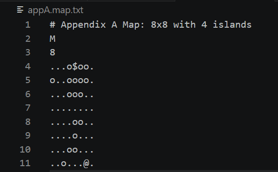
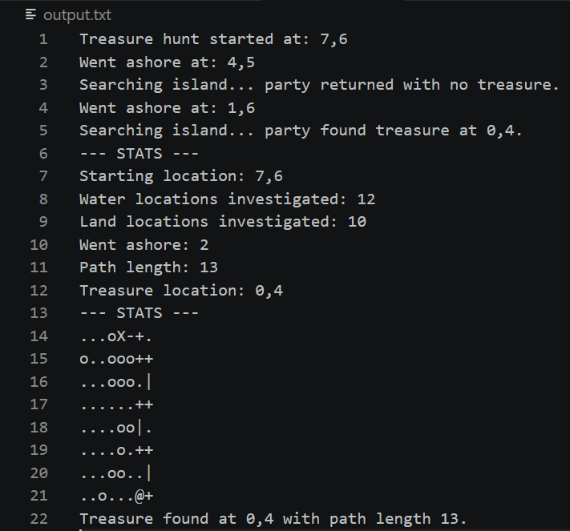
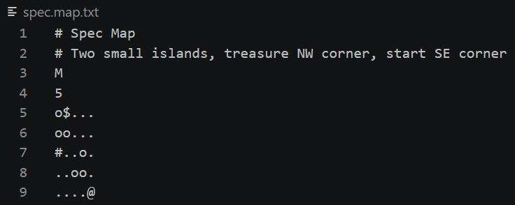
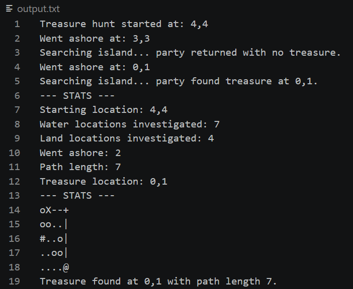
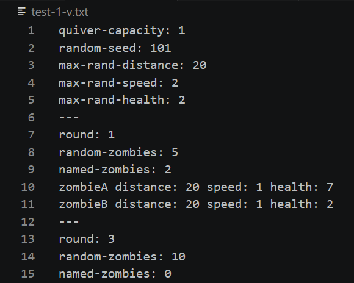
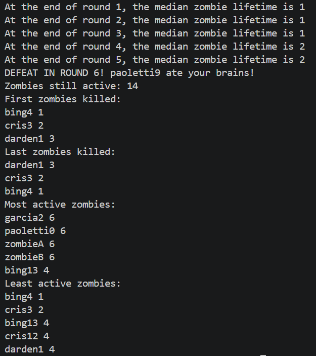
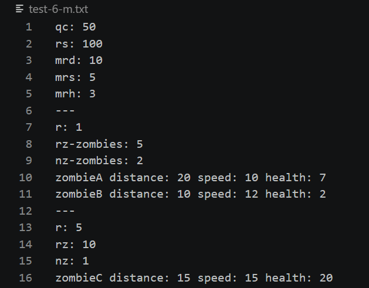
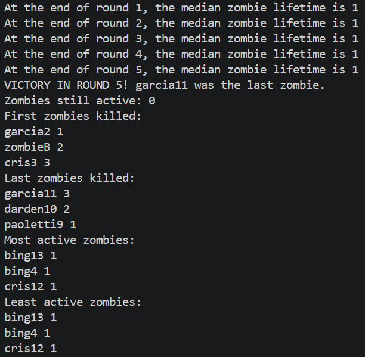
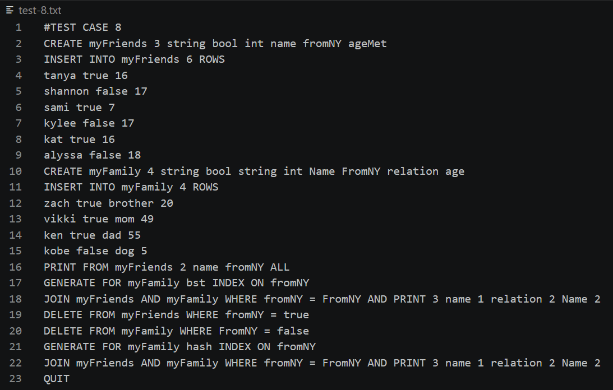
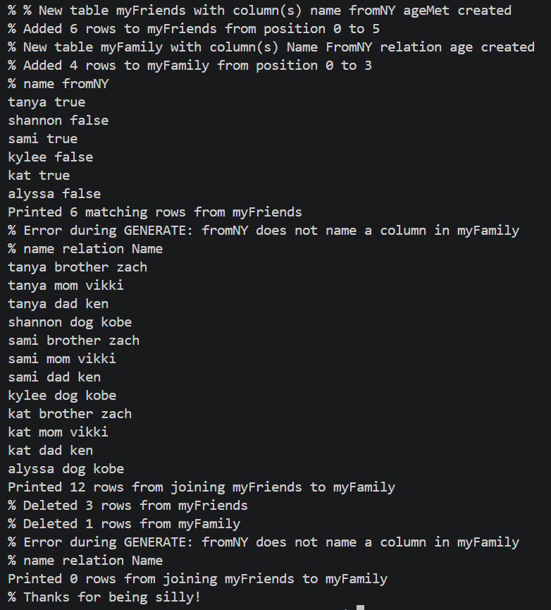

C++ Projects
Treasure Hunt
A high-performance navigation system that identifies the most efficient route from a starting coordinate to a target in a complex 2D 'Treasure Hunt' environment. Custom back-tracing algorithm utilized to reconstruct path taken.
Key Technical Features:
- Robust system translates 2D grid coordinates into searchable state space, handling map boundaries and obstacles
- Implements both optimized Breadth-First Search (BFS) and Depth-First Search (DFS)
- Manages user input through command line arguments for several game settings (including but not limited to)
- Route-finding container used while traversing water (stack or queue)
- Route-finding container used while traversing land (stack or queue)
- Order of search priority (North, East, South, West) for discovery of adjacent tiles around current location
- Treasure map or list displaying locations that describe final path taken
Example Execution 1:
Settings: QUEUE water traversal, STACK land traversal, NWSE priority, Map path display
Input File

Output File

Example Execution 2:
Settings: STACK water traversal, QUEUE land traversal, EWSN priority, List path display
Input File

Output File

Zombie Attack
Efficient and optimal algorithm implemented to prioritize zombie killing based on their unique srengths, speeds, and relative distances. Several rounds played until all zombies killed or zombies kill player.
Key Technical Features:
- Priority queue used to prioritize zombie killing
- New zombies created both directly as specified by input file and also through random generations
- Manages user input through command line arguments for level of verbosity of output
Example Execution 1:
Input File

Terminal Output

Example Execution 2:
Input File

Terminal Output

Data Management System
Several tables of data managed and manipluated based on input file. Operations inlude creating new tables, inserting/deleting/printing data from existing tables, joining distinct tables based matching values of selected columns, and generating a search index (hash or BST) on a selected column of a table.
Key Technical Features:
- Design of custom table data structure for efficient storage
- Maps and unordered maps used to create BST and hash indexes
- Error handling for duplicate table names, attempted access to non-existent tables/columns, and unrecognized commands
Example Execution:
Input File

Terminal Output

Graph Traversals
Finds either the minimum spanning tree or an efficient solution to the Traveling Salesperson Problem given a graph as a list of vertices. For increased complexity, movement from the first to third quadrant (or vice versa) is prohibited.
Key Technical Features:
- Prim's algorithm implemented to find the minimum spanning tree
- 2-Opt local search heuristic impltemented for TSP if time efficiency is chosen as priority
- Branch and Bound algorithm implemented for TSP if optimal solution is chosen as priority
Example Execution:
Input File
Output 1
Goal: Find MST of graph and display list of edges as node pairs
Output 2
Goal: Find "good enough" solution to TSP within O(N2) time complexity
Output 3
Goal: Find optimal solution to TSP